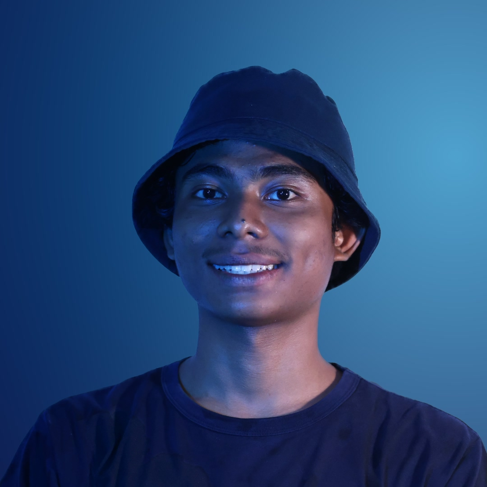

Showcase — Long Form
Karya Terbaru
Showcase — Short Form

Video Editor & Content Creator
Menghidupkan pesan lewat cerita yang terasa seperti film — membantu content creator, pasangan wedding, hingga perusahaan dan agensi mengubah rekaman mentah menjadi karya sinematik yang berkesan.
Showcase — Long Form
Showcase — Short Form